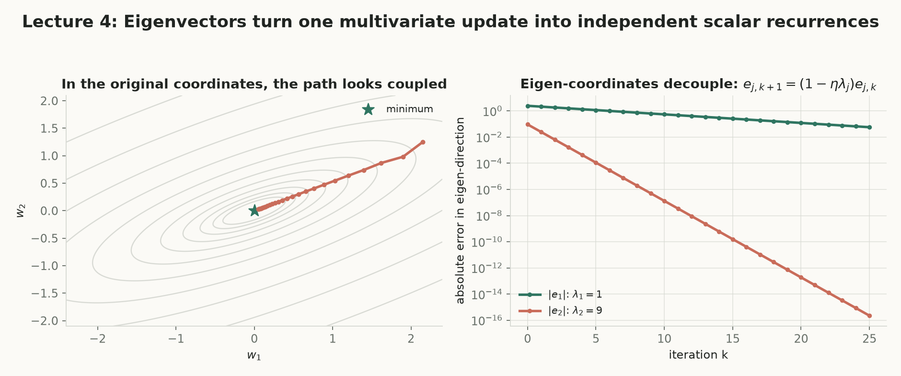
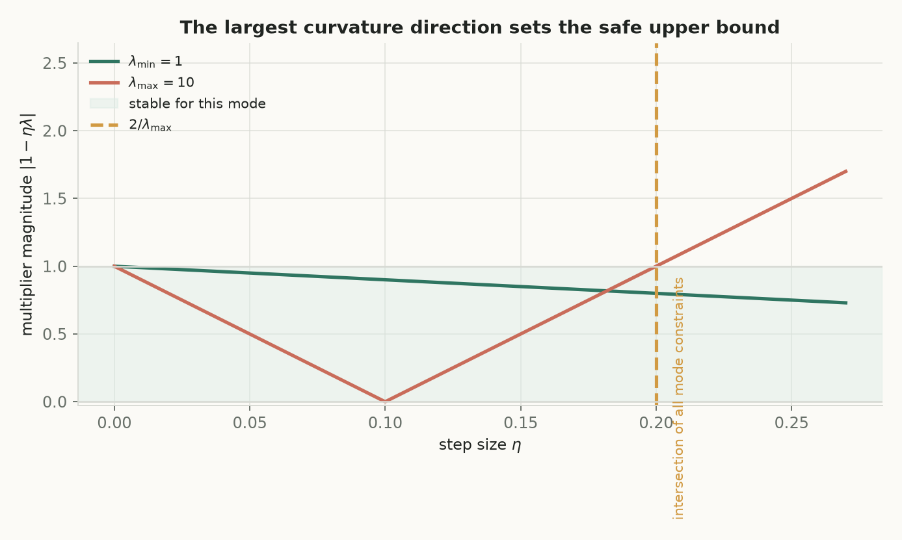
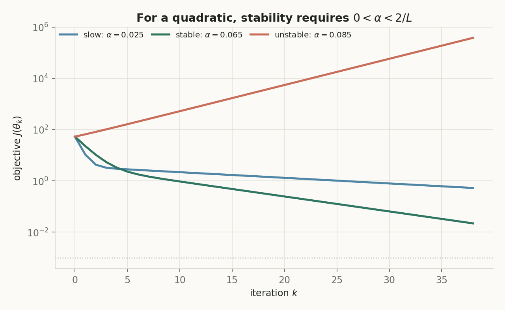
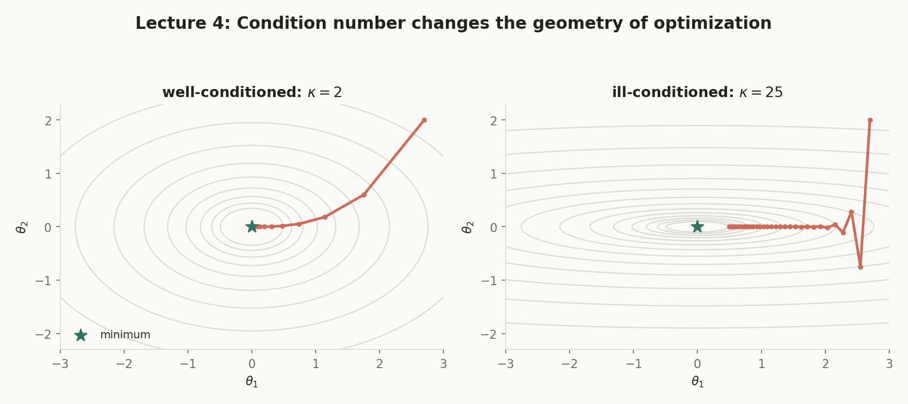
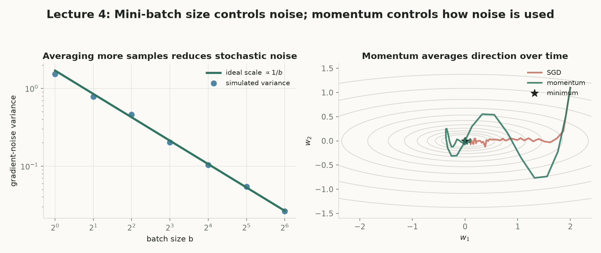

第 4 讲 · 互动附属页
Optimization II
第 3 讲给出了梯度下降更新 $w_{t+1}=w_t-\eta\nabla L(w_t)$；本讲追问四个问题：线性回归中 GD 何时真的收敛？为什么有些损失地形难走？为什么大规模机器学习敢用随机梯度？什么时候 $\nabla L=0$ 足以说明全局最优？
把 GD 拆成标量模态
误差递推 $e_{t+1}=(I-\eta H)e_t$ 在 Hessian 特征方向上变成一维收缩问题；学习率上界、收敛速度都由特征值说了算。
优化速度、随机性、最优性是同一几何
λ_max 卡住步长、κ 决定快慢、凸性认证驻点——全由损失的形状连接。
递推 → 谱 → SGD → 凸性
先写出误差如何被每步变换，再问何时收敛多快，再问随机梯度和驻点何时可信。
概念地图：点击节点跳到对应小节
实线是核心路径；紫色节点属于拓展。箭头从方块边界出发，在另一方块边界结束，避免穿过节点。
核心1. 从损失到误差递推
先约定记号：粗体小写是向量（$\mathbf w,\mathbf y$），大写是矩阵（$X,H$），$e_t=w_t-w^\star$ 是参数误差（不是自然常数）；学习率 $\eta>0$。缩放预告：第 3 讲用 $L_3=\frac{1}{2n}\|y-Xw\|^2$，本讲用 $L_4=\frac12\|y-Xw\|^2$——同一数据下 $\nabla L_4=n\nabla L_3$，要复现同样的更新步应取 $\eta_4=\eta_3/n$；这只是尺度约定，不是结论矛盾。
是什么
Hessian $\nabla^2L(w)$ 是二阶偏导矩阵；正规方程 $X^\top Xw^\star=X^\top y$ 刻画最优解。
白话理解
梯度说“往哪走”，Hessian 说“地面有多弯”；误差递推则回答“每走一步，离碗底的距离被乘上什么”。
干嘛用
把“GD 是否收敛”变成研究矩阵 $I-\eta H$ 反复乘一个向量会不会趋于零。
怎么算
展开三项分别求导：常数项梯度为零；线性项给 $-X^\top y$；二次项因 $X^\top X$ 对称给 $X^\top Xw$。
为什么重要
因为 $H=X^\top X$ 不随 $w$ 变，GD 更新是仿射线性变换——这正是后面能做特征分解分析的原因。
逐步推导（每步注明所用规则）。第一步，展开二次型（分配律）：
$$L(w)=\frac12(y-Xw)^\top(y-Xw)=\frac12y^\top y-w^\top X^\top y+\frac12w^\top X^\top Xw.$$
第二步，逐项求梯度（常数项为零；线性项 $\nabla(-w^\top X^\top y)=-X^\top y$；二次项因 $X^\top X$ 对称，$\nabla(\frac12w^\top X^\top Xw)=X^\top Xw$）：
$$\nabla L(w)=X^\top Xw-X^\top y,\qquad H:=\nabla^2L(w)=X^\top X.$$
第三步，定义误差 $e_t=w_t-w^\star$ 并从更新式两边减去 $w^\star$（代入 GD 定义）：
$$e_{t+1}=w_t+\eta X^\top y-\eta X^\top Xw_t-w^\star.$$
第四步，关键替换——用正规方程 $X^\top y=X^\top Xw^\star$ 消去 $X^\top y$，再合并含 $\eta$ 的两项：
$$e_{t+1}=e_t-\eta X^\top X(w_t-w^\star)=(I-\eta H)e_t\ \Rightarrow\ e_t=(I-\eta H)^t e_0.$$
实验 A「两步 GD 复算器」：$L(w)=\frac12w^\top Hw$，$w^\star=0$，$w_0=(1,1)$。step-box 逐步现算 $w_1,w_2$ 与两方向乘子；左图等高线 + 现算 20 步轨迹。把 $\eta$ 拖过 $2/\lambda_{\max}$（默认 $=0.5$）看轨迹发散。
核心2. 特征分解与学习率条件
$H=X^\top X$ 实对称半正定，存在正交 特征分解 $H=Q\Lambda Q^\top$。把误差展开到特征基上：$e_t=\sum_i c_{i,t}q_i$；因为 $Hq_i=\lambda_iq_i$，矩阵乘法在特征方向上只剩标量乘法——多维问题拆成 $p$ 个一维问题。注意：$\lambda_i$ 是 Hessian 特征值，与第 6 讲的正则强度 $\lambda$ 是不同对象。
是什么
每个特征方向独立演化 $c_{i,t+1}=(1-\eta\lambda_i)c_{i,t}$；线性收敛 指 $\|e_t\|\le\rho^t\|e_0\|$ 的几何速度衰减。
白话理解
狭长谷地=陡方向+平方向；每个方向有自己的“每步乘子”，谁在放大谁就在拖后腿或翻车。
干嘛用
把收敛条件翻译成标量不等式 $|1-\eta\lambda_i|<1$ 的联立求解。
怎么算
逐步解 $-1<1-\eta\lambda_i<1$：左半给 $\eta\lambda_i<2$、右半给 $\eta>0$；所有方向的交集由 $\lambda_{\max}$ 卡住：$0<\eta<2/\lambda_{\max}$（严格小于——等于时乘子为 $-1$，翻号不衰减）。
为什么重要
零特征值方向乘子恒为 $1$：$\ker(X^\top X)=\ker(X)$，这些方向不改变预测与损失，但参数会保留初始化的零空间分量；$\rho(\eta)=\max_i|1-\eta\lambda_i|$ 给出 $\|e_t\|\le\rho^t\|e_0\|$。
形态判读（看包络而不是相邻两步）：$0<\eta\lambda_i<1$ 同号收缩；$1<\eta\lambda_i<2$ 翻号但幅度收缩；$\eta\lambda_i=2$ 幅度不变；$>2$ 发散。
实验 B「稳定区间与轨迹」：左图是乘子绝对值 $|1-\eta\lambda|$ 关于 $\lambda$ 的 V 形曲线（当前 $\eta$），水平线 $1$ 是稳定边界，两个端点 $\lambda_{\min},\lambda_{\max}$ 的值标出；右图是 $H=\operatorname{diag}(\lambda_{\max},\lambda_{\min})$ 的等高线与现算 30 步 GD 轨迹（$w_0=(1,1)$）。



核心3. 条件数与最优固定学习率
设 $H\succ0$，条件数 $\kappa(H)=\lambda_{\max}/\lambda_{\min}\ge1$。$\kappa$ 接近 1 时等高线接近圆；$\kappa$ 大时是狭长椭圆。学习率受陡方向限制，平方向就成了瓶颈。
是什么
$\kappa=\lambda_{\max}/\lambda_{\min}$ 汇总曲率不均衡；最优固定学习率 $\eta^\star=2/(\lambda_{\max}+\lambda_{\min})$。
白话理解
一个步长要同时照顾最陡与最平的方向；最好的折中是让两端“一样糟”。
干嘛用
在已知谱区间时给出对整个迭代过程最稳妥的常数步长。
怎么算
保守选择 $\eta=1/\lambda_{\max}$ 时最慢方向乘子 $1-1/\kappa$（$\kappa=10\to0.9$，$\kappa=1000\to0.999$）；minimax 最优让两端绝对值相等、符号相反。
为什么重要
$\rho^\star=(\kappa-1)/(\kappa+1)$ 随 $\kappa$ 趋近 1——病态问题即使配最优步长也慢。
minimax 论证（逐步）：对固定 $\eta$，$|1-\eta\lambda|$ 关于 $\lambda$ 是 V 形凸函数，闭区间 $[\lambda_{\min},\lambda_{\max}]$ 上的最大值必在端点，所以只需看两端；若左端绝对值更大，可微调 $\eta$ 向右改进，反之亦然——只有 $1-\eta\lambda_{\min}=-(1-\eta\lambda_{\max})$ 时两侧都无法再改进。解得：
$$\eta^\star=\frac{2}{\lambda_{\max}+\lambda_{\min}},\qquad \rho^\star=1-\eta^\star\lambda_{\min}=\frac{\lambda_{\max}-\lambda_{\min}}{\lambda_{\max}+\lambda_{\min}}=\frac{\kappa-1}{\kappa+1}.$$
实验 C「最优学习率工作台」（讲义练习 2）。默认 $\lambda_{\min}=2,\lambda_{\max}=50$：$\kappa=25$；$\eta=1/\lambda_{\max}$ 时最慢乘子 $0.96$；$\eta^\star=1/26\approx0.0385$；$\rho^\star=12/13\approx0.9231$。左图 $\rho(\eta)$ 曲线标出最低点；右图对数刻度对比 100 步后的误差比例。

核心4. SGD：无偏性与 mini-batch 方差
机器学习损失是样本损失的平均 $L(w)=\frac1n\sum_i\ell_i(w)$；$n$ 大时完整梯度太贵。SGD 用大小为 $b$ 的 mini-batch 平均梯度 $\widehat g_B=\frac1b\sum_{i\in B}g_i$ 代替。无偏性讨论的是：参数 $w$ 固定，对抽样随机性取期望。
是什么
无偏估计：$\mathbb E[\widehat g_B\mid w]=\nabla L(w)$；有限总体修正：不放回时方差多一个因子 $\frac{n-b}{n-1}$。
白话理解
随机抽的梯度“平均而言指对方向”，但不承诺每一次都接近完整梯度。
干嘛用
用梯度噪声换更便宜的更新；方差按 $1/b$ 缩小（标准差只按 $1/\sqrt b$）。
怎么算
单样本：$\mathbb E[g_I]=\sum_i\frac1n g_i$（期望定义）；有放回 batch：期望线性性；不放回：指示变量 $Z_i$、$\mathbb E[Z_i]=b/n$。方差：有放回 $\Sigma/b$（独立 ⇒ 交叉协方差为零）；不放回 $\frac{n-b}{b(n-1)}\Sigma_{\mathrm{pop}}$。
为什么重要
同样 $b$ 下不放回方差更小（负相关），$b=n$ 时为零；两种抽样都无偏。停止准则在 SGD 中更微妙：单步损失有随机波动，要看滑动平均或验证集。
实验 D「mini-batch 方差复算」：讲义基准 $\bar g=1$、$\sigma^2_{\mathrm{pop}}=5$；$b=2$ 时有放回 $\mathrm{Var}=5/2=2.5$、不放回 $\frac{4-2}{2\cdot3}\cdot5=5/3\approx1.667$。练习 3 切换到 $g=(-1,2,5)$（期望 $=2$，此时 $b$ 上限变 3）。抽样按钮真用 Math.random()。

核心5. 凸性与强凸性：驻点何时可信
一阶信息不够：$w^2$ 的驻点是全局最小，$-w^2$ 的是局部最大，$w^3$ 的既不是极小也不是极大。凸函数 把局部切平面信息升级为全局下界；强凸函数 再排除平坦的最优集合。
是什么
凸性三视角（同一几何性质的三种检查）：零阶——图像不高于割线；一阶——切平面是全局下界 $L(v)\ge L(w)+\nabla L(w)^\top(v-w)$；二阶——$\nabla^2L(w)\succeq0$。
白话理解
碗没有暗坑：站在任何一点看切平面，整个函数都在它上方。
干嘛用
把“$\nabla L=0$”升级为全局最优证书；强凸再保证唯一。
怎么算
驻点代入一阶条件：$\nabla L(w)=0\Rightarrow L(v)\ge L(w)$ 对所有 $v$。强凸唯一性：两个最小点的中点严格更好，矛盾。
为什么重要
最优性链条：全局最小 ⇒ 局部最小 ⇒ 驻点；凸时反向成立。凸不保证唯一（$L=w_1^2$ 中 $w_2$ 任意）。复合保凸需要外层单调等额外条件——ReLU 例 $(2-\max\{0,w\})^2$ 违反中点不等式：$L(0.5)=2.25>2=\frac{L(-1)+L(2)}2$。
实验 E「凸性检验台」：选函数、选两个端点，画面数曲线与割线；现算中点函数值 $L(\frac{a+b}2)$ 与割线中点 $\frac{L(a)+L(b)}2$，检验凸性不等式是否成立。默认 ReLU 复合例、端点 $-1$ 与 $2$，复现 $2.25>2$ 的违反。
拓展6. Momentum、Newton 步与实践权衡
普通 GD 只用当前梯度。momentum 累计历史方向：$s_t=\beta s_{t-1}-\eta\nabla L(w_t)$，$w_{t+1}=w_t+s_t$——陡方向梯度左右翻号时历史项相互抵消，平缓方向同号则逐步叠加。它改变的是轨迹惯性，不是梯度估计的无偏性，也替代不了步长检查。
是什么
Newton 步：最小化二阶 Taylor 局部模型，对 $\delta$ 求导得 $H_t\delta=-g_t$，即 $w_{t+1}=w_t-H_t^{-1}\nabla L(w_t)$。
白话理解
GD 用同一步长走所有方向；Newton 在每个特征方向上按 $1/\lambda_i$ 走——陡少走、平多走。
干嘛用
正定二次目标上 $H$ 恒定，一步收敛：$w-H^{-1}(Hw-X^\top y)=H^{-1}X^\top y=w^\star$。
怎么算
一般目标的 Hessian 随位置变、求解 $p\times p$ 系统很贵——Quasi-Newton / L-BFGS 用连续梯度变化近似曲率校正。
为什么重要
batch size 与 momentum 解决不同问题：前者减随机噪声（方差 $1/b$），后者均衡各方向进展。线搜索（如 Armijo 回溯）把“方向正确”和“步长合适”分成两个可观察的决定。
实验 F「momentum 轨迹」：同一狭长目标 $H=\operatorname{diag}(4,1)$、$w_0=(1,1)$ 上现算 30 步 GD（蓝）与 momentum（绿）轨迹。$\beta=0$ 退化为普通 GD。
拓展7. 常见误区与课程连接
六条常见误区：先自答，再点开核对
一条递推串起三门课
第 2 讲的正规方程 $X^\top Xw^\star=X^\top y$ 与第 3 讲的梯度下降，在本讲结合为 $e_{t+1}=(I-\eta X^\top X)e_t$。后续：模型选择把 $\eta$、batch size 当超参数；正则化改变 Hessian 特征值、改善条件数；神经网络带来非二次非凸损失；泛化分析区分训练目标与测试表现。
核心收束：特征值决定速度，凸性决定可信
误差递推
$$e_{t+1}=(I-\eta H)e_t$$
稳定学习率
$$0<\eta<\frac{2}{\lambda_{\max}}$$
最优固定步长
$$\eta^\star=\frac{2}{\lambda_{\max}+\lambda_{\min}},\quad \rho^\star=\frac{\kappa-1}{\kappa+1}$$
SGD 无偏与方差
$$\mathbb E[\widehat g_B]=\nabla L,\quad \operatorname{Cov}(\widehat g_B)=\frac{\Sigma}{b}$$
一阶凸条件
$$L(v)\ge L(w)+\nabla L(w)^\top(v-w)$$
强凸
$$L(v)\ge L(w)+\nabla L(w)^\top(v-w)+\frac m2\|v-w\|^2$$